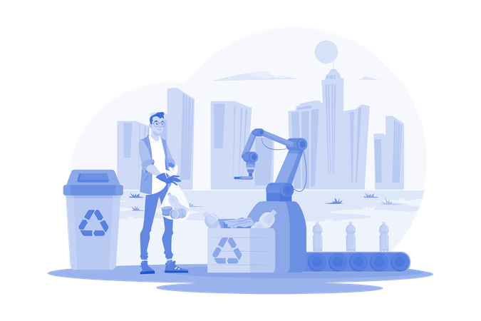

O uso consciente da tecnologia significa utilizar celulares,
computadores e outros dispositivos de forma responsável,
evitando desperdícios e excessos.
A produção de aparelhos eletrônicos consome
recursos naturais e energia, por isso é importante usar com equilíbrio.
A sustentabilidade na tecnologia envolve criar e usar dispositivos de forma que causem menos impacto ao meio ambiente.
Resíduos eletrônicos são aparelhos como celulares, computadores, baterias e carregadores que não têm mais utilidade. Esses materiais não devem ser jogados no lixo comum, pois contêm substâncias que podem contaminar o solo e a água.
Economizar recursos naturais, como água e energia, é essencial para preservar o planeta. A tecnologia pode ajudar nisso, mas também pode aumentar o consumo se não for usada com cuidado./p>
Boas práticas ambientais são ações do dia a dia que ajudam a preservar a natureza. Elas podem ser simples, mas têm grande impacto quando feitas por muitas pessoas.
